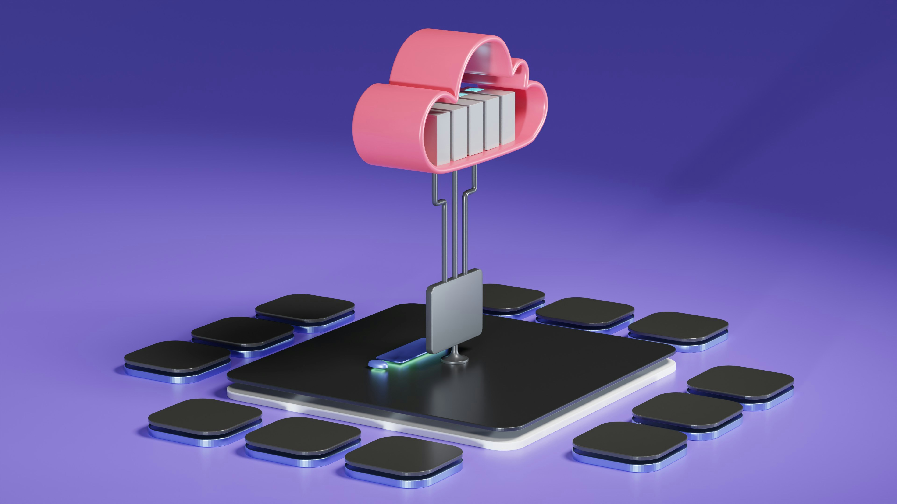

Hub-and-Spoke Virtual Network Architecture

Overview
I built a secure Hub‑and‑Spoke network architecture in Microsoft Azure to demonstrate my ability to design cloud networks that are scalable, well‑segmented, and aligned with enterprise best practices. The hub hosts shared services like Bastion, DNS, and peerings, while each spoke contains isolated workloads with tightly governed traffic paths. This project highlights my knowledge of cloud networking, routing design, Zero Trust principles, and operational governance. It also shows that I can build environments that are secure, predictable, and ready for real‑world workloads.
Architecture Diagram

Project Screenshots


Methodologies Used
Hub-and-spoke Topology Design
Cost Optimization
Network Segmentation
Infrastructure as Code (IaC)
Bastion Access
Route Architecture
Traffic Flow Modeling
Step-by-Step Walkthrough
1. Create the Resource Group
- Create a new resource group in the same region for all project resources.
2. Build the Virtual Networks
- Create hub-vnet (10.0.0.0/16) with:
- SharedServicesSubnet (10.0.1.0/24)
- ManagementSubnet (10.0.2.0/24)
- AzureBastionSubnet (10.0.3.0/26)
- Create spoke1-vnet (10.1.0.0/16) with:
- WebSubnet (10.1.1.0/24)
- AppSubnet (10.1.2.0/24)
- Create spoke2-vnet (10.2.0.0/16) with:
- WebSubnet (10.2.1.0/24)
- DataSubnet (10.2.2.0/24)
3. Configure Hub‑Spoke VNet Peering
- Peer hub ↔ spoke1 (two connections).
- Peer hub ↔ spoke2 (two connections).
- Do not peer the spokes to each other.
4. Create and Apply Network Security Groups
- Create NSGs for:
- hub ManagementSubnet
- spoke1 WebSubnet
- spoke1 AppSubnet
- spoke2 WebSubnet
- Add rules to allow required HTTP/HTTPS/SSH traffic and deny all else.
- Associate each NSG with its corresponding subnet.


5. Create a Route Table (UDR)
- Create a route table for spoke1.
- Add a default route (0.0.0.0/0) pointing to a simulated NVA IP in the hub.
- Associate the route table with spoke1 WebSubnet.
{
"type": "Microsoft.Network/routeTables",
"apiVersion": "2025-05-01",
"name": "[parameters('routeTables_rt_spoke1_to_hub_name')]",
"location": "eastus",
"tags": {
"project": "portfolio-lab1"
},
"properties": {
"disableBgpRoutePropagation": false,
"routes": [
{
"name": "route-to-hub-nva",
"id": "[resourceId('Microsoft.Network/routeTables/routes', parameters('routeTables_rt_spoke1_to_hub_name'), 'route-to-hub-nva')]",
"properties": {
"addressPrefix": "0.0.0.0/0",
"nextHopType": "VirtualAppliance",
"nextHopIpAddress": "10.0.1.4"
}
}
]
}
},
6. Configure Private DNS
- Link:
- hub-vnet (auto‑registration enabled)
- spoke1-vnet (resolution only)
- spoke2-vnet (resolution only)

7. Deploy Test VMs
- Deploy two B1s Ubuntu VMs:
- vm-hub-mgmt in hub ManagementSubnet
- vm-spoke1-web in spoke1 WebSubnet
- No public IPs; use Bastion Developer SKU for access.
- Enable auto‑shutdown immediately.
8. Validate Connectivity
- From vm-hub-mgmt:
- Ping vm-spoke1-web (success).
- SSH into vm-spoke1-web.
- Resolve DNS names via Private DNS.
- Attempt spoke‑to‑spoke ping (expected fail).
- Use Network Watcher tools:
- IP Flow Verify
- Next Hop
- Effective Security Rules
9. Tear Down Temporary Resources
- Delete both VMs.
- Delete orphaned disks and NICs.
- Keep the network fabric (VNets, NSGs, peering, DNS).
Key Configurations
- VNet Peering: Hub-to-spoke, non-transitive configuration.
- User-Defined Routes: Custom route tables enforcing traffic through the hub.
- Network Security Groups: Least-privilege inbound/outbound rules.
- Private DNS: Centralized name resolution via hub DNS servers.
- Azure Bastion: Secure, agentless admin access without public IPs.
- IP Addressing Plan:/16 VNets with /24 subnets for scalable, non‑overlapping segmentation.
Challenges & Solutions
- Challenge: B-series SKU VMs are unavailable in East US region.
- Solution: The most affordable VM series SKU available in East US was the D-series SKU. I was bound to the East US region, as the networking services within Azure are region-locked. This taught me to always check regional SKU availability before planning deployments.
- Challenge: Bastion Developer SKU is unavailable in East US region.
- Solution: I upgraded to the Bastion Basic SKU but was unable to connect to my VMs because the RDP session connection was unstable. I tried accessing my VM using Bastion on both Mozilla FireFox and Google Chrome, as well as both browsers on Incognito mode. I cleared my browser cookies and reset my router- none of this worked. I decided to upgrade to Bastion Standard SKU to use the Native Client SHH capability, which resolved the issue.
- Challenge: VMs were rebuilt multiple times.
- Solution: I had to return to this project more than once after sessions took me longer than I expected. In the future, I will use ARM templates (or Bicep) to ensure consistent, repeatable VM deployments and reduce rebuild time.
Results & Metrics
- Hub‑to‑Spoke Connectivity: Successful ICMP and SSH communication from hub VM to spoke VM, confirming correct peering and NSG rules.
- Spoke Isolation: Spoke‑to‑spoke traffic intentionally failed, validating non‑transitive hub‑spoke design and proper segmentation.
- DNS Resolution: Private DNS zone resolved VM hostnames across all VNets, demonstrating centralized name resolution.
- Effective Routing: Next Hop analysis showed traffic flowing through hub as expected; UDR applied correctly to spoke1 WebSubnet.
- Zero Public Exposure: All VMs accessed via Bastion Developer SKU with no public IPs, reducing attack surface to zero.
- Cost Efficiency: Total project cost remained under $1; all core components (VNets, NSGs, peering) incurred no ongoing charges.
- Security Enforcement: IP Flow Verify confirmed:
- SSH from hub → allowed
- HTTP from internet → allowed
- RDP from internet → denied
Key Takeaways
- Azure Resource Organization: I learned how to structure a small cloud environment using Resource Groups, VNets, subnets, and role‑appropriate naming conventions to keep everything clean, predictable, and scalable.
- Secure Access: Implementing Azure Bastion reinforced the importance of eliminating public RDP exposure and using platform-managed access for hardened entry into VMs.
- Network Segmentation: Designing subnets with clear purposes (management, workload, jump host) helped me understand how segmentation reduces blast radius and improves operational clarity.
- Operational Reliability: Rebuilding VMs while preserving the network fabric taught me how to maintain stability, avoid configuration drift, and recover cleanly without breaking dependencies.
- Identity‑Aligned VM Access: Instead of relying on local admin accounts or exposing RDP, I used Azure Bastion and my Entra ID identity to access VMs. This reinforced the shift toward identity‑based administration even in small environments, without needing full RBAC role design for this project.
- Documentation Discipline: Capturing architecture, configuration, and validation steps strengthened my ability to communicate technical decisions clearly.